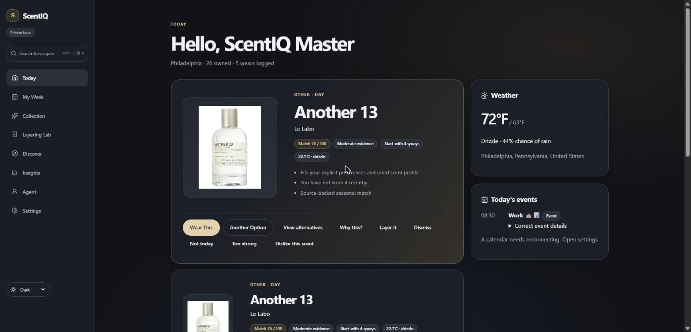
A personal fragrance intelligence app that considers your collection, the weather, and what’s next on your schedule — then offers a clear recommendation.
ScentIQ grew out of the same interest behind my eBay fragrance analysis. Instead of analysing a market, it helps one person get more out of the collection they already own. Members keep a persistent collection, log what they wear, record private custom fragrances, and see insights computed from that history.
The repository is a lightweight monorepo. The frontend is Next.js 16 with React 19 and strict TypeScript; the API is FastAPI on Python 3.14 with SQLAlchemy, Alembic, and psycopg; and PostgreSQL 18 holds the fragrance catalog, collections, and wear history. The browser only ever talks to Next.js, which calls the internally hosted FastAPI service server-side — the API is never publicly routable. A generated OpenAPI contract keeps the two sides in step: continuous integration fails if the committed contract drifts from the running application.
Sign-in is invite-only through Clerk. FastAPI verifies each token’s signature, issuer, audience, and expiry, then maps the provider’s subject to an internal user, creating one on first contact. Authentication fails closed: if the identity configuration is missing, protected endpoints return 503 rather than serving unauthenticated traffic.
The catalog holds both shared curated fragrances and each member’s private custom entries. Partial unique indexes let the two coexist, every repository query carries an ownership predicate, and another member’s private row returns 404 rather than 403 so its existence doesn’t leak. Account deletion is a two-phase flow driven by a signed webhook, with a scheduled reconciliation job for any deletion that never completes.
The development environment is defined in modular Bicep: Container Apps for the web and API services, Azure Container Registry, PostgreSQL, Key Vault, Blob Storage, Application Insights, alerting, and an availability test. Services reach Azure resources through managed identities rather than stored secrets, and GitHub Actions deploys through OIDC. Database migrations run as an explicit, observable job before each rollout — never automatically when the API starts.
The private beta runs on the Azure development environment against my real collection. Today and My Week pair each day’s plans with the local forecast and return a scored pick with its reasoning; the Collection, wear logs, and Insights are persisted; Discover searches a catalog built from Fragrantica, Parfumo, and Luckyscent data and scores each candidate for taste match, collection expansion, and redundancy; and the Layering Lab grades blends from the shelf as you change direction, occasion, and season.
Recorded from the live private beta.
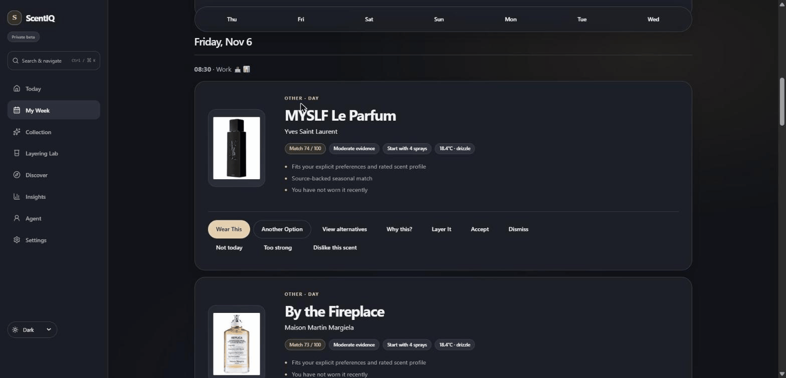
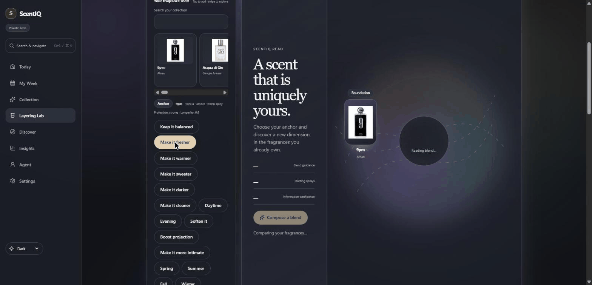
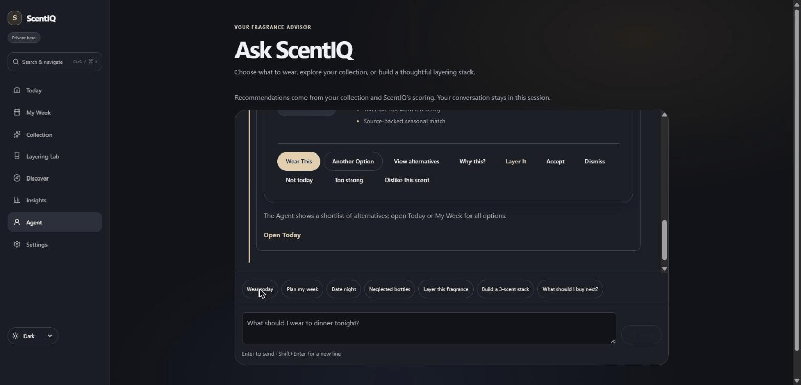
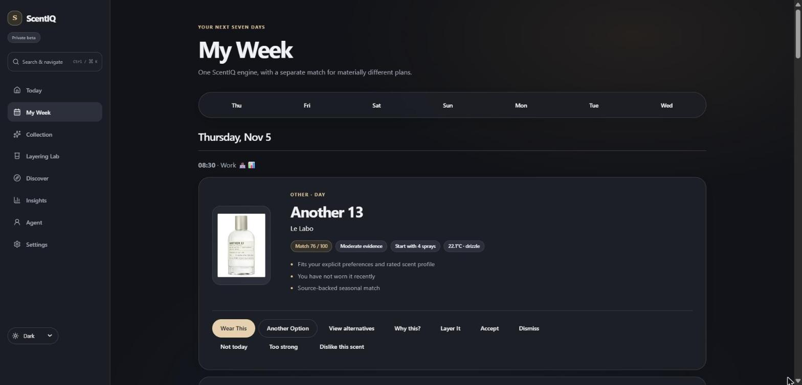
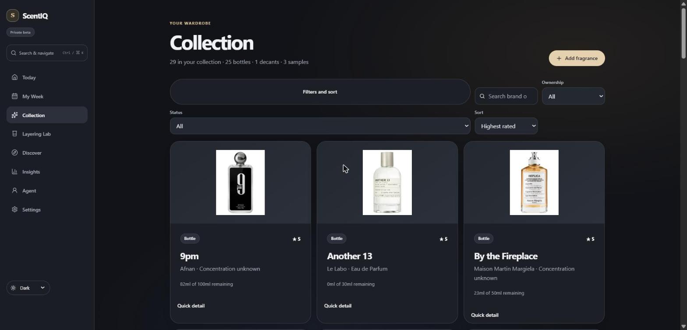
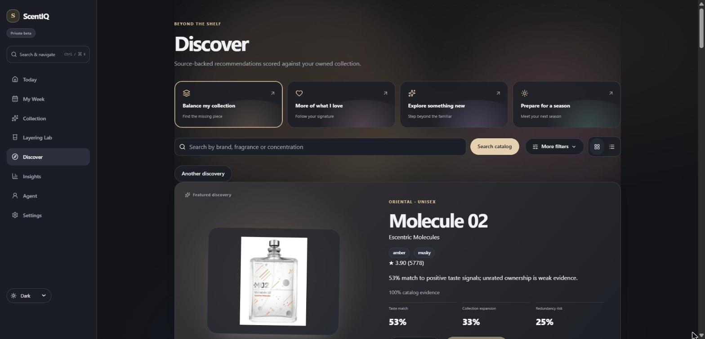
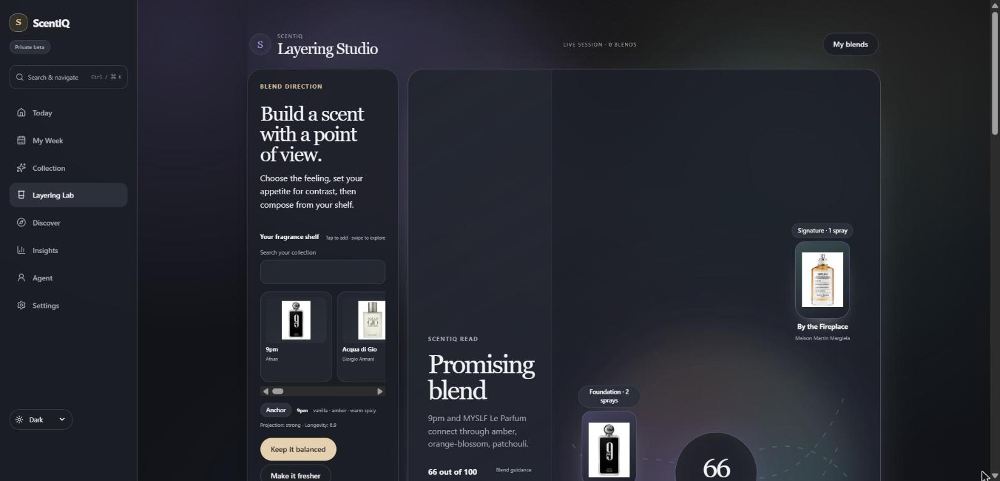
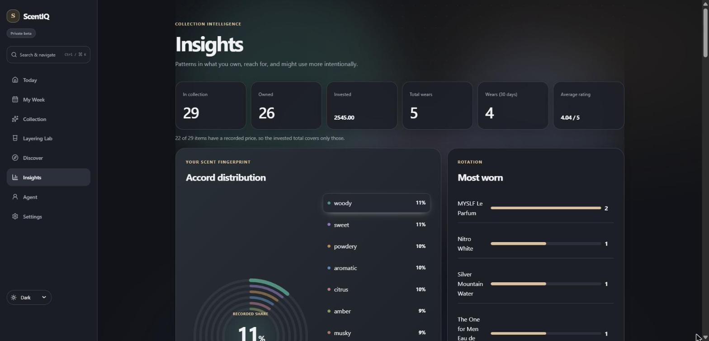
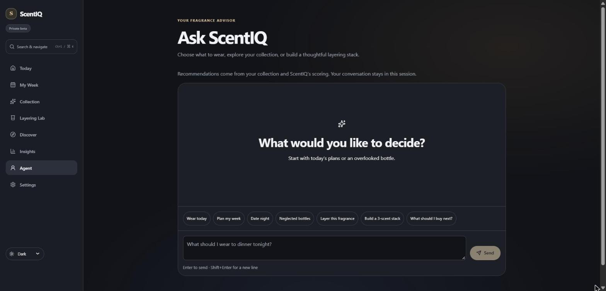
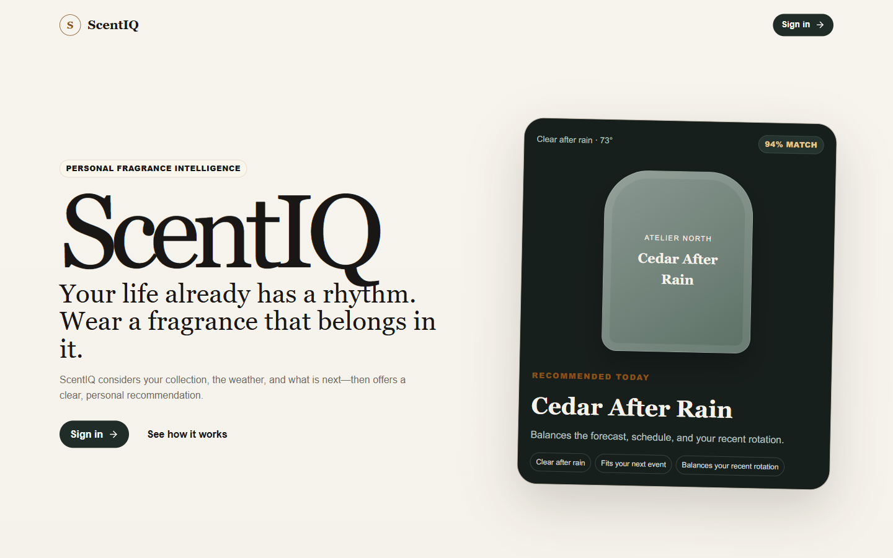